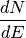

Introduction¶
Breif Description¶
This package is used to compute the gamma ray spectra  for light particles, such as, pions, kaon, electrons and muons, in an energy regime where the mass effects are important, i.e. is the MeV energy range. The code has been written in python/cython.
Installation¶
To install Hazma, clone the package from [https://github.com/LoganAMorrison/Hazma.git](https://github.com/LoganAMorrison/Hazma.git):
git clone https://github.com/LoganAMorrison/Hazma.git
Once cloned, move into the Hazma directory and install using pip:
cd Hazma
sudo pip install .